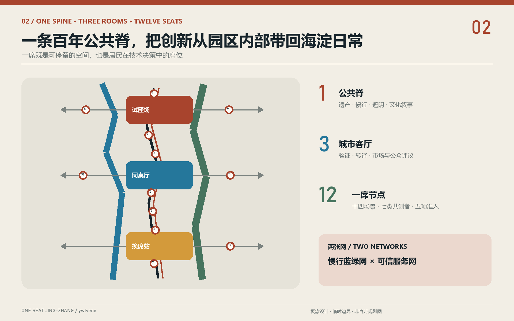
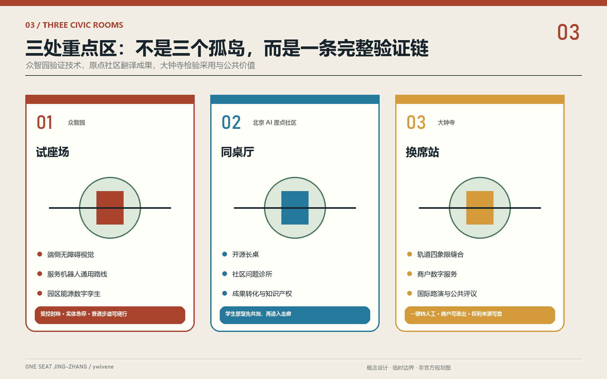
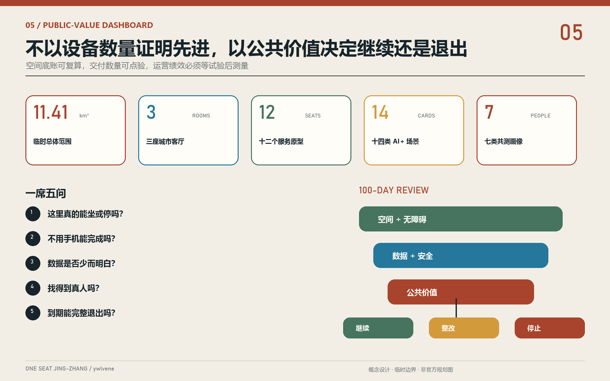
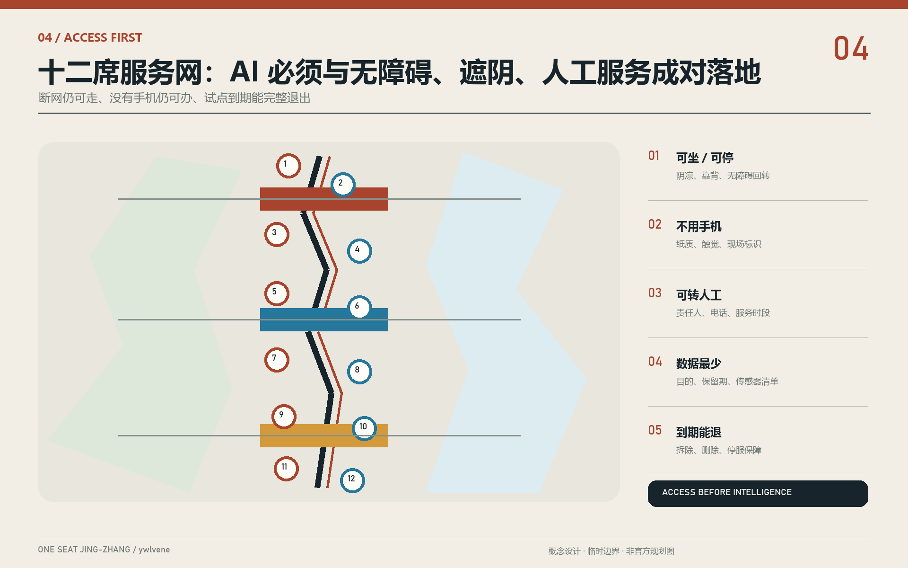

试座场
Test Seat Yard
沿清河设置可关闭测试廊、绿色看台和普通步道旁路。
- 端侧无障碍视觉
- 服务机器人通用路线
- 园区能源数字孪生
受控时段 · 实体急停 · 独立评测
AI 不应先占据城市，而应先给居民留出一席：能坐、能问、能退出，也能找到真人。

一席是物理座位，也是一份公共话语权。每个节点同时提供无障碍停留、明白的数据说明、非数字路径、真人责任人和明确复盘日。

阴凉、靠背、无障碍回转与无需消费的停留空间，是进入技术试点的第一道门。
纸质、触觉、连续导视和现场服务必须和数字服务同时存在。
每一席公开用途、传感器、保留期、责任主体与删除机制。
设备可关闭、设施可拆、数据可删；失败试点公开原因并完整离场。
众智园负责安全验证，原点社区负责把科研语言翻译成生活问题，大钟寺负责检验真实采用、商业可持续与公共价值。
沿清河设置可关闭测试廊、绿色看台和普通步道旁路。
高校、开源社区、居民和创业服务坐在一张连续公共长桌旁。
围绕轨道四象限组织消费技术试用、商户服务和公开评议。

先看日常问题，再决定要不要 AI。筛选三类场景，查看每张卡的空间载体与人工边界。
林下座椅与饮水点；只用公开气象，不识别人脸。
老人 / 户外劳动者自愿报障 + 设施状态；同时保留触觉导视与人工热线。
轮椅 / 低视力只提示拥挤级别，不追踪儿童；现场人员负责疏导。
家长 / 儿童默认匿名，醒目标注“转人工”，不用年龄做差别定价。
数字弱势者水、厕、充电、储物；不接入平台绩效。
配送员只用清权史料；生成内容标注来源并接受纠错。
居民 / 访客可以匿名纸卡投递，最少联系方式，人工确认工单。
所有使用者公开时刻 + 聚合流量，不做个人通勤画像。
通勤者不诊断、不存病历；医疗决定交给专业人员。
社区居民代码与数据逐项授权；保留不联网的安静席位。
师生 / 创业者识别障碍物类别而非身份，原始画面不出设备。
产业验证 1限速、实体急停、现场监护，普通步道可绕行。
产业验证 2只采设施数据；节能结论由工程师核验。
产业验证 3公开传感器与保留期，由社区数据受托人审计。
居民 / 学校 / 企业不以调用量或屏幕数量证明先进。每 100 天进行空间、数据和公共价值三道审查。

实施不是把概念一次性浇筑成永久设施，而是让小样有退出权，让城市在使用中学习。
无障碍审计、居民访谈、问题地图、设备登记，先放十二个可移动席位。
三厅各开放一个受控试点；无重大事件、退出可用、复盘公开才继续。
修复三条东西慢行断点、林下休息、骑手补给与首层公共界面。
建立数据受托人、开放评测与年度换席日，只复制通过审查的场景。

这组索引把展览叙事重新连接到规划任务、空间底账和机器可读证据，避免漂亮页面脱离正式成果。
一脊、三厅、十二席的临时总体结构；对应 `site-overview` 与 `land-use-structure` 图件。
43.6 km² 统筹研究、约 11.4 km² 总体设计、约 368.4 ha 重点区。
众智园试座场、AI 原点同桌厅、大钟寺换席站，均使用临时 polygon。
研发、产业服务、社区服务、公园开敞空间为设计建议，不是法定用地。
一条南北公共脊与三条东西缝合线，断网仍有物理导视。
林下席位、透水地面、河流与公园连续降温网络；展示设施限时可撤。
P0 共测、P1 小样、P2 缝合、P3 网络治理；每 100 天一次公开复盘。
14 张场景卡，其中 S11-S13 为产业验证；每张卡都有人工兜底。
临时总体范围；正式边界发布后整体复算。
来自概念绿地图层，不代表现状或审定指标。
来自概念公共空间图层，待官方底图校准。
公告 1.3-1.5 与 agent.1-agent.6 在 compliance matrix 逐项映射。
确定性验证、空间复核、专业证据、视觉包装四道门；临时边界只产生提示。
控规、权属、建筑、市政、交通、消防、文保与运营主体仍待专业确认。
“AI 原点”也应是公共责任的原点。
让每一个模型，先学会给城市让出一席。
总体范围和三处重点区均使用仓库 provisional geometry；所有图件为概念设计，待官方边界、控规、权属、建筑、市政、交通和文保资料发布后整体复算。
成果作者GitHub: ywlvene · Codex 海淀生活观察 Agent